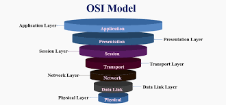
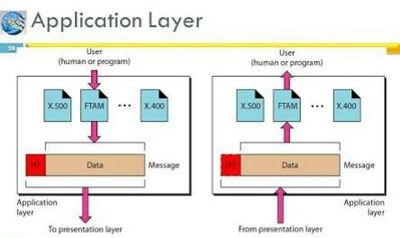
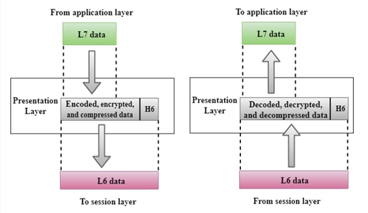
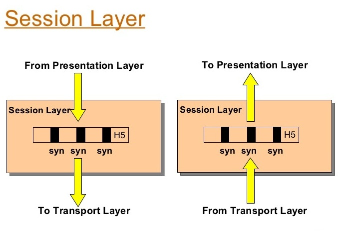
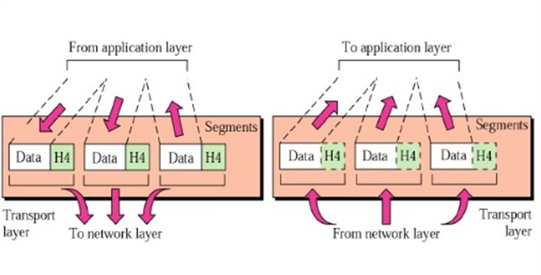
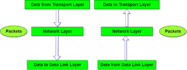
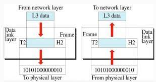
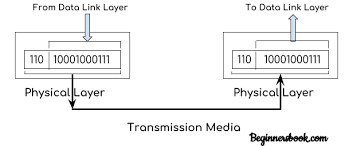
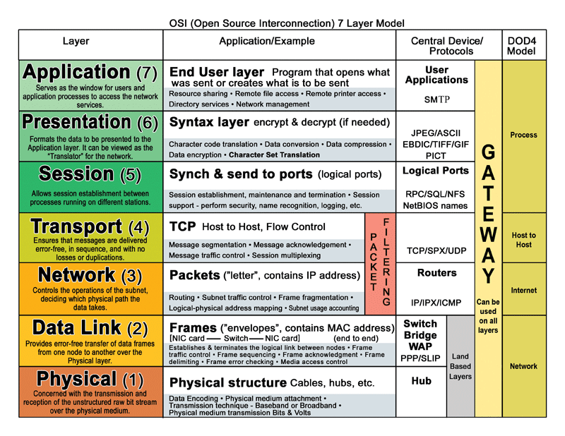

OSI MODEL
- Version: 2.0
- Author: Shawn Mwitia
- Created: 19 July, 2021
- Update: 27 July, 2021
What is the OSI Model?
The OSI Model (Open Systems Interconnection Model) is a conceptual framework used to describe the functions of a networking system. The OSI model characterizes computing functions into a universal set of rules and requirements in order to support interoperability between different products and software.
From: https://www.forcepoint.com/cyber-edu/osi-model#:~:text=The%20OSI%20Model%20(Open%20Systems,between%20different%20products%20and%20software
Layers of the OSI Model
In the OSI reference model, the communications between a computing system are split into seven different abstraction layers: Physical, Data Link, Network, Transport, Session, Presentation, and Application.
From https://www.imperva.com/learn/application-security/osi-model/
a) Application Layer
The application layer is used by end-user software such as web browsers and email clients. It provides protocols that allow software to send and receive information and present meaningful data to users. A few examples of application layer protocols are the Hypertext Transfer Protocol (HTTP), File Transfer Protocol (FTP), Post Office Protocol (POP), Simple Mail Transfer Protocol (SMTP), and Domain Name System (DNS).
b) Presentation Layer
The presentation layer prepares data for the application layer. It defines how two devices should encode, encrypt, and compress data so it is received correctly on the other end. The presentation layer takes any data transmitted by the application layer and prepares it for transmission over the session layer.
c) Session Layer
The session layer creates communication channels, called sessions, between devices. It is responsible for opening sessions, ensuring they remain open and functional while data is being transferred, and closing them when communication ends.
d) Transport Layer
The transport layer takes data transferred in the session layer and breaks it into “segments” on the transmitting end. It is responsible for reassembling the segments on the receiving end, turning it back into data that can be used by the session layer.
e) Network Layer
The network layer has two main functions. One is breaking up segments into network packets, and reassembling the packets on the receiving end. The other is routing packets by discovering the best path across a physical network.
f) Data Link Layer
The data link layer establishes and terminates a connection between two physically-connected nodes on a network. It breaks up packets into frames and sends them from source to destination.
g) Physical Layer
The physical layer is responsible for the physical cable or wireless connection between network nodes. It defines the connector, the electrical cable or wireless technology connecting the devices, and is responsible for transmission of the raw data, which is simply a series of 0s and 1s, while taking care of bit rate control.
Summary Diagram
Below is the summary diagram of each layers functions:
